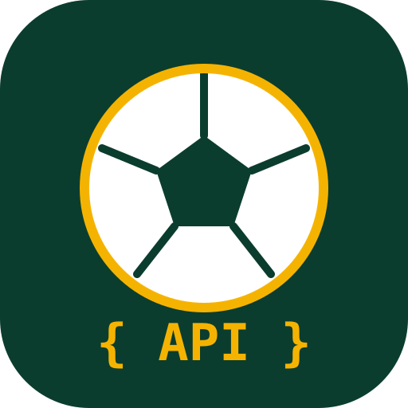

Sii-Football Data API
Free and open data for disability football: Amputee, Blind, Deaf, Powerchair and Para football. Standardized JSON and CSV, no API key, no signup. Updated automatically every 6 hours.
Endpoints
- /data/api/v1/sports.json – sports
- /data/api/v1/competitions.json – competitions
- /data/api/v1/fixtures.json – upcoming matches
- /data/api/v1/results.json – finished matches
- /data/api/v1/sports/{sport}/results.json – per sport (amputee, blind, deaf, powerchair, para)
- latest.json and latest.csv – everything in one file
Quick start
fetch("https://siiberram.github.io/Sii-Football/data/api/v1/results.json")
.then(r => r.json())
.then(j => console.log(j.data));Or use the ready JavaScript client:
<script src="https://siiberram.github.io/Sii-Football/clients/siiFootballApi.js"></script>
<script>SiiFootball.results("amputee").then(console.log);</script>Data format
{
"match_id": "…", "sport": "amputee",
"competition": "waff-world-cup",
"date_utc": "2026-11-22T06:00:00Z", "status": "finished",
"home_team": {"name": "Ghana", "code": "GHA", "score": 1},
"away_team": {"name": "Morocco", "code": "MOR", "score": 0},
"venue": "…", "source_url": "…",
"is_stale": false, "source_updated_at": "…"
}Current coverage
The project is young. Today it includes the IBSA Blind Football World Championships 2018 and part of the WAFF Amputee World Cup 2026. Coverage of other competitions is being added. Some results are entered manually from public reports and may contain mistakes; each match lists its source.
About
Built by Berra as the data source for the SiiMatchMind football prediction app, and shared for everyone. Free to use; please credit "Sii-Football". Not affiliated with IBSA, WAFF, FIPFA, IFCPF or ICSD. Corrections and new sources are welcome.
واجهة برمجية مجانية لكرة القدم لذوي الإعاقة
بيانات مفتوحة ومجانية لنتائج ومباريات كرة القدم لذوي الإعاقة: بتر الأطراف، المكفوفين، الصم، الكراسي المتحركة، والشلل الدماغي. بصيغتي JSON وCSV بلا مفتاح ولا تسجيل، وتتحدث تلقائياً كل 6 ساعات.